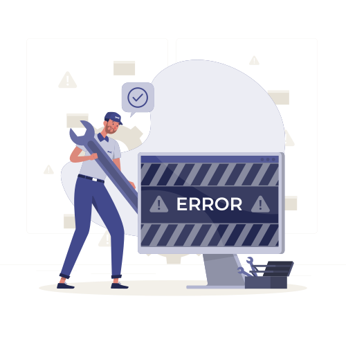

Microsoft 365 support with clear SLAs, or full tenant management.
From SLA-based incident support for your internal IT team, to full tenant administration, governance and continuous improvement.
Microsoft 365 is business-critical. Managing it properly takes time, expertise and structure.
Organisations rely on Microsoft 365 every day for email, collaboration, document sharing, meetings, identity and access. But internal IT teams often have to manage support, administration, security, projects and user requests at the same time.
- Incidents are handled reactively and without clear prioritisation
- Internal IT needs reliable support to analyse Outlook, Teams, OneDrive, SharePoint and MFA issues
- Licences, groups, access rights and Teams structures are not consistently reviewed
- The organisation depends on one or two Microsoft 365 specialists
- Security improvements are postponed because operational work comes first
- Management needs reporting, visibility and predictable service levels
Choose the right model
Start with a support-focused model for incidents and service requests, or move directly to a managed model for administration, governance and continuous improvement.
Microsoft 365 Support Desk
Reliable incident and request management with clear SLAs.
- Microsoft 365 incident management
- Outlook and Exchange Online support
- Teams, OneDrive and SharePoint Online support
- Access and MFA support for authorised contacts
- Standard service requests
- Ticketing process and SLA tracking
- Escalation to Microsoft or third parties when required
- Monthly support reporting
- Optional 24/7 coverage for critical incidents
Managed Microsoft 365 Services
Ongoing administration, governance and improvement of your environment.
- Everything in the Support Desk
- Microsoft 365 tenant administration
- User, group and licence management
- Exchange Online administration
- Teams administration and governance
- SharePoint and OneDrive administration
- Entra ID administration
- MFA and access policy support
- Monthly service and governance reporting
- Continuous improvement recommendations
- Security and compliance improvement options
Clear prioritisation and response targets
SLA levels are agreed contractually. The structure below is a typical basis for discussion. Response targets refer to first response or initial handling, not guaranteed resolution time.
Major Microsoft 365 service impact or business-critical access issue affecting many users.
- Coverage
- Business hours by default; optional 24/7 if selected
- Response target
- Typically within 1 hour
Significant impact on a team, key user group or important Microsoft 365 function.
- Coverage
- Business hours
- Response target
- Typically within 4 business hours
User-related issue raised by internal IT, or a standard service request with limited business impact.
- Coverage
- Business hours
- Response target
- Typically within 1 business day
Information request, minor issue, low urgency or planned request.
- Coverage
- Business hours
- Response target
- Typically within 2 business days
Final SLA commitments, service hours, languages, escalation paths and out-of-hours rules are confirmed in the service agreement.
How the service works

- 01Introduction call
Environment, internal IT setup, pain points, expected service level
- 02Scope & SLA
Supported workloads, priorities, hours, escalation rules, targets
- 03Onboarding
Contacts, ticketing flow, access model, documentation
- 04Service delivery
Incidents, requests, administration, recurring activities
Included by default
- Microsoft 365 incidents and requests raised by authorised contacts
- Outlook, Exchange Online, Teams, OneDrive and SharePoint support
- Access and MFA support for IT and admin contacts
- Ticketing, prioritisation and SLA tracking
- Microsoft escalation when required
- Monthly support reporting
- Tenant documentation and governance recommendations
Not included by default
- PC hardware, printers and local devices
- Local network, Wi-Fi, firewall or VPN troubleshooting
- On-site intervention
- Non-Microsoft business applications
- Large migration or transformation projects (delivered as projects)
- 24/7 support for all incidents (optional, for critical incidents only)
Before you ask
By default, no. The model is designed for internal IT teams, helpdesk teams and authorised Microsoft 365 administrators. Direct end-user support can be added as a separate option if required.
No. SLA commitments define response or initial handling targets. Resolution time depends on root cause, your environment, Microsoft service status and third-party dependencies.
No. The service supports and strengthens your internal team. You decide which activities remain internal and which are delegated.
Some activities require administrative access. It is defined during onboarding and follows least privilege, named accounts, MFA and documented approval processes.
Yes. Start with incident and request management, then move to Managed Services when you need broader administration, governance, reporting and continuous improvement.
Yes. Security assessments, workshops and remediation projects combine with either service level. A Microsoft Security Assessment is a good entry point if you first want to understand your risks.